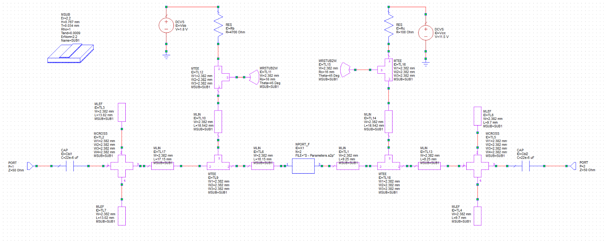
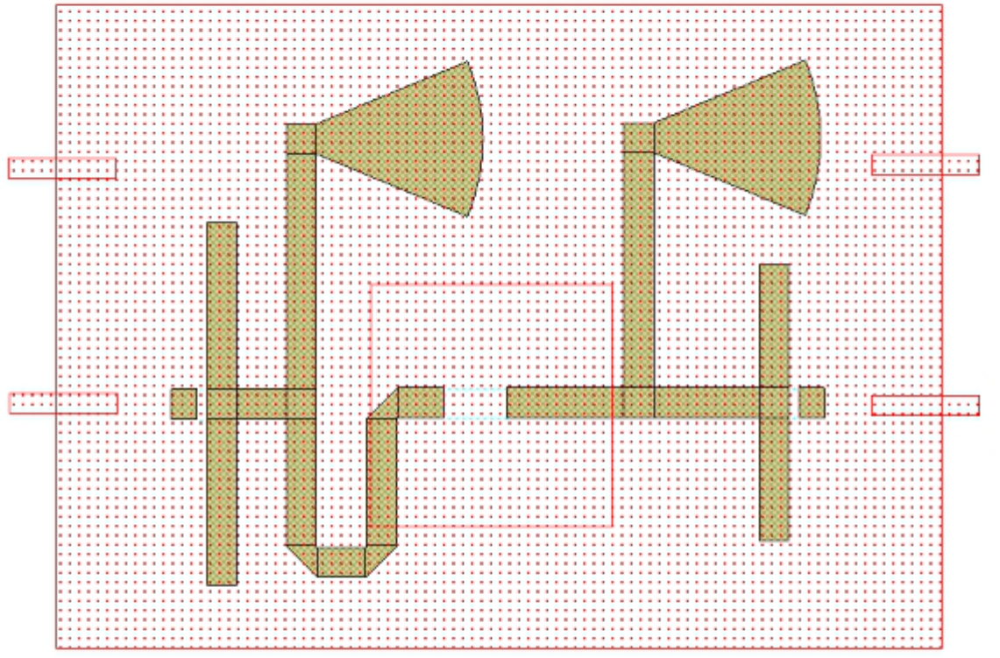
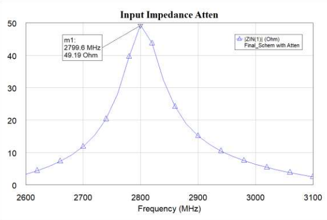
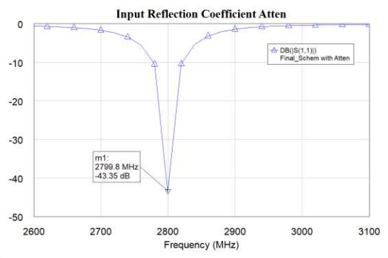
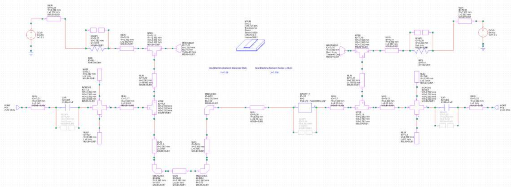
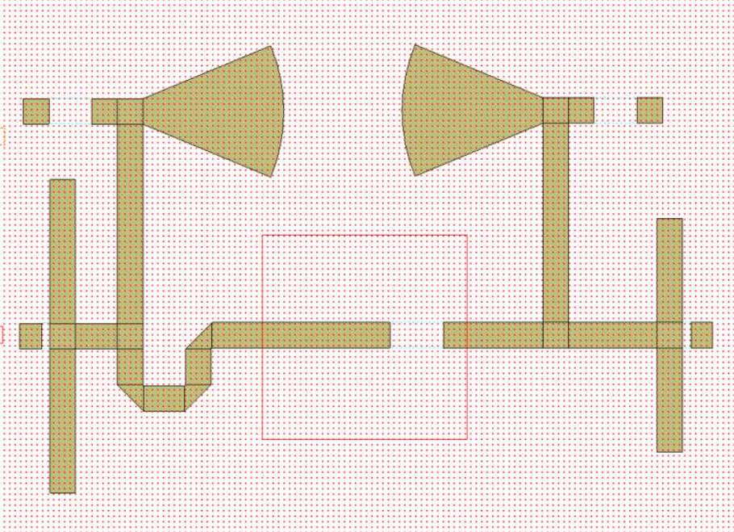
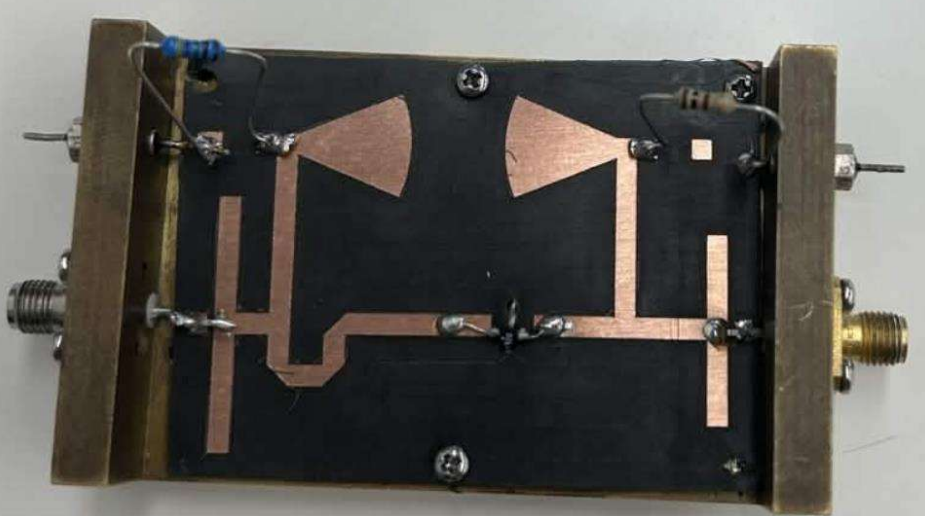

Project Detail
Microwave RF Amplifier and Matching Network
Designed an impedance-matching network for an RF amplifier using S-parameters, transmission-line models, and Cadence AWR.
Design Overview
Multiple calculation were automated in MATLab to determine the ideal stub length to allow our amplifier to be matched to a 50 ohm network at 2.8GHz
Cadence AWR was used for the design as it allows complex analyses of the S-parameters and gains of the circuit

Initial Cadence AWR design of the microwave matching network and its transmission-line layout.

Initial layout on the subtrate with radial stubs to simulate open ends

The input impedance was analyzed to determine how closely the network matched the target source impedance.

Input reflection results were used to evaluate return loss and identify frequency regions requiring further optimization.
After analysis of the reflection coefficient and the input impedance small changes to stub lengths were made to improve the theorethical reflection coefficient and get the input impedance closer to 50

Optimization Design using Cadence AWR

Optimized design layout including spaces for resistors and capacitors after printing.

Final Design produced by hand soldering each component
Real design results
Sadly one of the soldered components fell off and the S-Parameter results were not close to the ones expected.